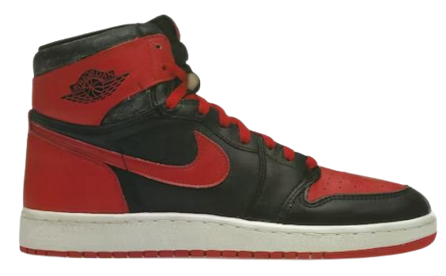
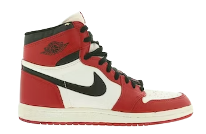
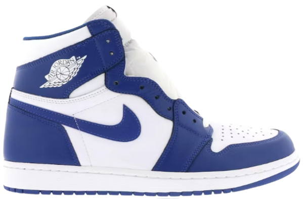
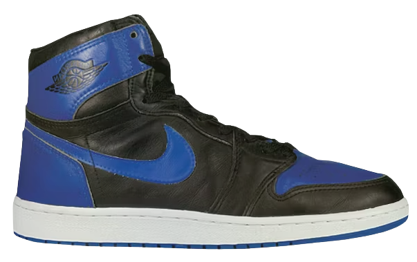
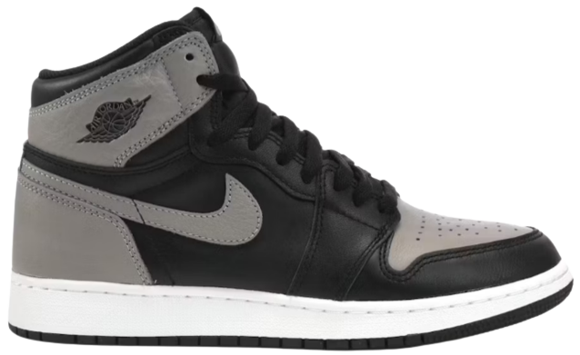
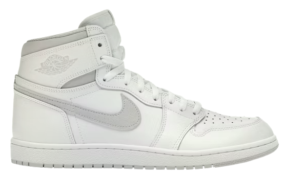
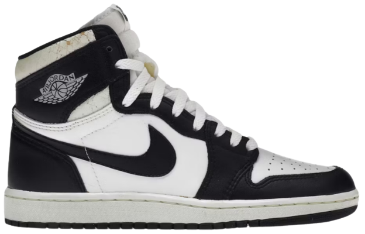
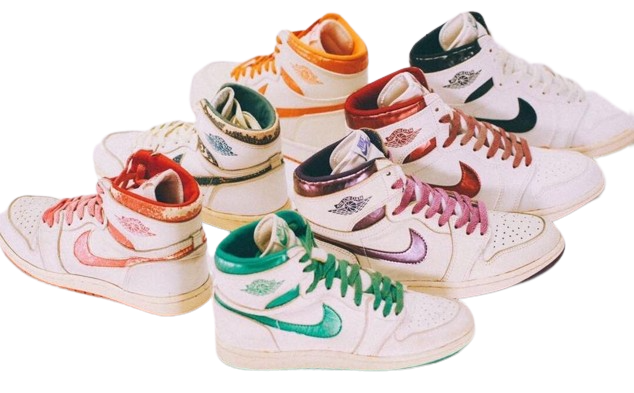

Table of Content
Intro
The Air Jordan 1, a shoe that needs no introduction, stands as a testament to the enduring legacy of both basketball and sneaker culture. Released between 1984 and 1986, this revolutionary silhouette not only marked the beginning of Michael Jordan's iconic partnership with Nike but also ignited a sneaker revolution that continues to shape fashion and sportswear to this day. Let's dive into some of the remarkable colorways of the Air Jordan 1 and the stories that have made them legendary.
1. Black/Red ("Bred")
The Air Jordan 1 Black/Red colorway, often referred to as "Bred" for black and red, is the one that started it all. Its story is steeped in controversy, as the NBA initially banned the shoe due to its bold and unconventional color scheme. This ban only fueled the sneaker's popularity, setting the stage for the rise of the Air Jordan line. Michael Jordan defiantly wore the Bred colorway on the court, creating a legendary moment that resonates with fans to this day.
 by stockx.com2. White/Black-Red ("Chicago")
The Chicago colorway is arguably one of the most iconic and recognizable versions of the Air Jordan 1. With its white upper, black overlays, and red accents, the Chicago colorway pays homage to the city where Michael Jordan's legacy was forged. Worn during his early career, these shoes witnessed some of his most remarkable performances. The Chicago colorway became a symbol of excellence, reminding wearers of the determination and drive that defined Jordan's playing style.
 by stockx.com3. White/Blue ("Storm Blue")
Diverging from the red-dominated schemes, the Storm Blue colorway introduces a refreshing blend of white and blue. The cool, calm tones create a sophisticated look, making it a standout choice for those seeking a more understated yet stylish Jordan 1.
 by stockx.com4. Black/Royal-Blue ("Royal")
The Air Jordan 1 Black/Royal Blue colorway exudes a regal aura with its black and royal blue combination. It's a color scheme that not only catches the eye but also tells a story of dominance on the court. As Michael Jordan soared to greatness with every dunk, this colorway elevated the shoe's aesthetics to new heights, symbolizing his ascent in the basketball world.
 by stockx.com5. Black/Grey ("Shadow")
Incorporating shades of grey and black, the Shadow colorway exudes a subtle yet powerful aura. The balanced combination of neutral tones makes it an ideal choice for those who appreciate a versatile sneaker that seamlessly complements various styles.
 by stockx.com6. White/Blue ("Kentucky") and White/Red ("Black Toe")
The White/Blue and White/Red colorways celebrate the timeless combination of classic white leather with vibrant blue and red accents. These color schemes capture the essence of Michael Jordan's dynamic playing style – blending finesse with power. The White/Blue colorway symbolizes the limitless sky Jordan seemed to conquer with each leap, while the White/Red colorway embodies his fiery competitiveness and determination.
7. White/Natural-Grey
Clean, understated, and versatile, the White/Natural Grey colorway captures the essence of the Air Jordan 1's design philosophy. Its neutral tones allow the silhouette's iconic shape to shine, while the subtle accents provide a touch of uniqueness. This colorway represents the versatility that made the Air Jordan 1 a favorite among athletes and trendsetters alike.
 by stockx.com8. White/Black
the Black/White colorway stands as a testament to simplicity's enduring appeal. The stark contrast of black against white creates a clean and timeless aesthetic, making it a wardrobe staple for sneaker enthusiasts and fashion-forward individuals alike.
 by stockx.com9. Metallic
The metallic colorway adds a touch of luxury to the Air Jordan 1. There are six colors in total, which are blue, green, red, purple, orange, and black. The combination of white leather and metallic accents creates a striking contrast, reflecting Michael Jordan's unmatched charisma and elegance on and off the court. This colorway embodies the fusion of sport and style, making it a favorite among sneaker enthusiasts and fashion aficionados.
 by Max HankeIn Conclusion
The Air Jordan 1 colorways from 1984 to 1986 form a gallery of artistry and innovation. Each color scheme tells a unique story, encapsulating moments, emotions, and traits that have shaped both basketball and culture. From the rebellious spirit of the Bred colorway to the elegance of Metallic Purple, every iteration contributes to the legacy of a shoe that continues to inspire generations. As we admire and collect these colorways, we become custodians of history, ensuring that the stories of Michael Jordan's journey and the evolution of sneaker culture live on.